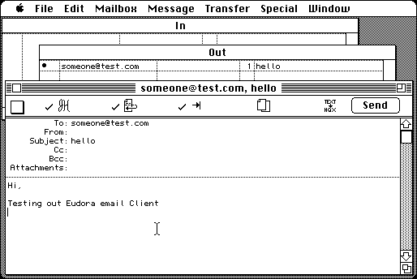

Download
eudora131.zip (168K) Eudora 1.3.1 repackaged into a zipped hfs disk image and checksum file. The disk image can be mounted with Mini vMac.
eudora131.hqx (279K) Eudora 1.3.1 in the original format.
copyright: QUALCOMM, University of Illinois Board of Trustees
mod date: Mar 17, 1993
license: freeware
last known url
(gone)
An email client. Mini vMac doesn't yet support internet access, but it can be used to read saved email. Source code is available (below).

Download Manual
Eudora_131_doc.zip (438K) Eudora 1.3.1 Manual repackaged into a zipped hfs disk image and checksum file. The disk image can be mounted with Mini vMac. (Consists of a collection of Microsoft Word documents.)
Eudora_131_doc.sit.bin (553K) Eudora 1.3.1 Manual in the original format.
Download Source
eudora131source.zip (401K) Eudora 1.3.1 Source repackaged into a zipped hfs disk image and checksum file. The disk image can be mounted with Mini vMac.
eudora131source.hqx (647K) Eudora 1.3.1 Source in the original format.
If you find these downloads useful, please consider helping the Gryphel Project, which hosts them.
Here are the md5 checksums for the downloads, signed with Gryphel Key 5:
--------- GRY SIGNED TEXT --------- b28e3eac686cff3134fa72e594f4dafa eudora131.zip b4ab93a54d2d0e9d3ff8502fb26f7a0e eudora131.hqx 8fc7669f0965145111bdca57b4f95981 Eudora_131_doc.zip d7f646c17309d1794dbc093922887321 Eudora_131_doc.sit.bin b528040ac6db4371bdc5b018b332bfb0 eudora131source.zip c5c95ffa7ba875d383ec02f98e966e18 eudora131source.hqx ------- BEGIN GRY SIGNATURE ------- Gry/4Xa8CFcUzxdN/PNi5JuhIfLrNz8pN3TKV5r6ZdJ9aeY34pxayGEdnw0EwTHw Nmq956FLO9HhA4d0UvtLGRFFY37LioL6O0hBtOYJ45DZPQk89qSqEnelsmEGQLpa ierMuUy8HtfTHlf3oVQD7nD9KlddtpLji9BjOZaEbtyrzJeYoi1ahvjEstXG6YHU -------- END GRY SIGNATURE --------